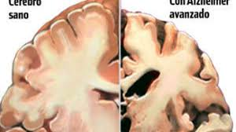

ENCICLPEDIA DE SALUD
Indice
/
Enfermedades por A
/
Alzheimer
Alzheimer

La enfermedad de Alzheimer es la forma más común de demencia entre las personas mayores. La demencia es un trastorno cerebral que afecta gravemente la capacidad de una persona de llevar a cabo sus actividades diarias.
Documento sobre el Alzheimer Drive accesible
Documento sobre el Alzheimer Drive no accesible
Documento sobre el Alzheimer descarga accesible
Documento sobre el Alzheimer descarga no accesible
Fases de la enfermedad
Fase 1
Fase 2
Fase 3
Problemas de memoria leves
Empieza el fallo de memoria a corto plazo
Perdida de la capacidad para responder a su entorno
Ligeros problemas cognitivos
Necesidad de ayuda con actividades cotidianas
Muerte
Pincha aquí para ampliar la información